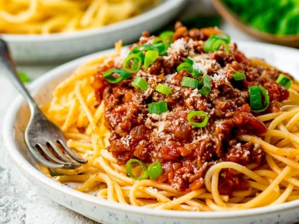

Home
Pasta Bolognese

Best Pasta Bolognese in the world!
- Pasta
- Beef
- Onions
- Olive Oil
- Spices
- Ground beef AND ground pork. Look for ground beef that’s 20% fat—often referred to as “80/20”—and use a high-quality ground pork, too. Adding ground pork to the meaty mix lends a ton of flavor.
- Fresh onions, carrots and celery. It’s easy to take these base ingredients for granted, but they’re sweet, deeply flavorful powerhouses! Celery is super savory, onion is sharp and carrots add just enough sweetness—they’ll build a bright, lightly sweet base for your sauce that’ll really dress up that store-bought sauce.
- Cream! As we mentioned above, one of the things that defines Bolognese sauce is the inclusion of dairy, like milk, butter, or in our case a healthy pour of heavy cream. It enriches the sauce and makes it incredibly luscious, silky and satisfying.
- Freshly-grated Parmesan cheese. A snowy dusting of real-deal Parmigiano-Reggiano over a big bowl of spaghetti Bolognese really perks up this quick sauce recipe. It’s not a must, but it’s worth the splurge.